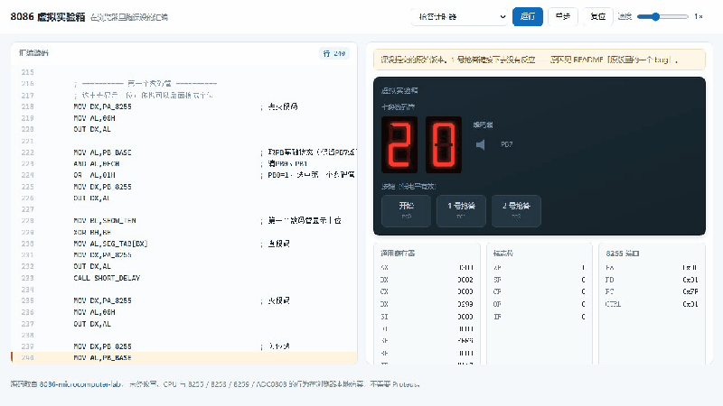
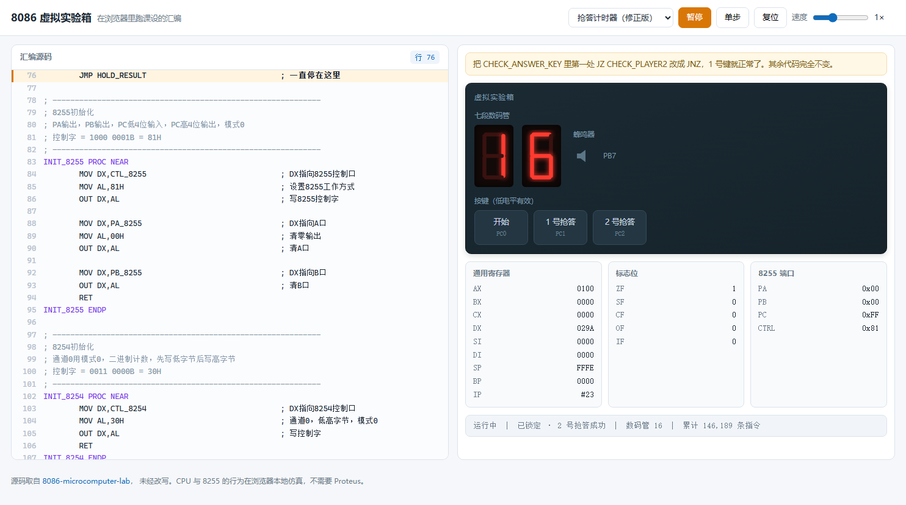
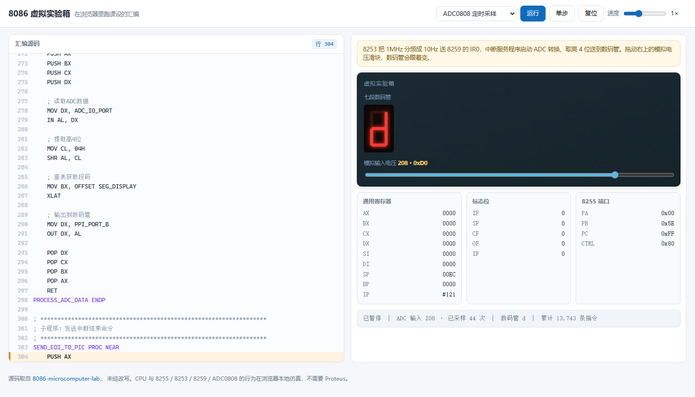

不用装 Proteus：我把 8086 微机原理课设搬进了浏览器
源码一字未改，跑的就是交上去的那份汇编。跑起来之后，还发现原版有个 bug。
一、先说说那堵墙
微机原理课设做完，交上去的是一堆东西：.asm 源文件、.pdsprj Proteus 工程、还有一份实验报告。
问题是，别人想看你的抢答器真的跑起来，得先跨过一道墙：
- 装 Proteus（好几个 G，还得找安装包）
- 找 8086 元件库（默认库里没有）
- 照着报告里的连线图把电路搭出来
- 用 MASM 把
.asm汇编成 exe - 手动把 exe 载入程序存储器
- 点运行
绝大多数人走到第一步就放弃了。
所以我做了个东西：把 8086 CPU 和那几个外设搬进浏览器。打开网页就能按「开始」，看数码管从 20 倒数；按抢答键，定格、锁定、蜂鸣器响一声。
源码一字未改。
在线地址：https://leslieryin.github.io/8086-emulator-lab/

二、为什么不模拟电路
最直接的想法是"在浏览器里跑 Proteus"，但这不现实——Proteus 模拟的是电路层面的电气行为，要做到那个精度，等于重写一个 SPICE。
我换了个角度想这件事：课设真正想验证的是什么？
不是"这个电路能不能导通"，而是"这段汇编的逻辑对不对"。8255 的输出有没有送到数码管、中断来了有没有进 ISR、标志位判断对不对——这些才是学生要证明的东西。
所以我的取舍是：
- 不模拟电路，只模拟 CPU 和芯片的寄存器行为
- 不做机器码编码——直接把源码解析成指令对象列表交给执行器
第二个取舍换来一个很实用的好处：能高亮正在执行的源码行。教学场景里，"代码走到第 47 行、此时 ZF=1"比"地址 0x1A3 处执行 74 02"有用得多。
代价是要自己实现一套汇编解析器（两遍扫描：先收集符号、分配数据段地址，再解析操作数——因为 CALL SCAN_DISPLAY 这种前向引用必须先知道标签在哪）。目前支持 41 条指令，覆盖这三个程序用到的全部。
CPU 侧带真实的标志位语义（ZF/SF/CF/OF/PF/AF）、16 位栈、CALL/RET/LOOP。
三、跑起来之后，发现代码里有个 bug
这是整件事里最有意思的部分。
抢答器交上去之后，我在模拟器里跑，发现：1 号键按下去毫无反应。
代码是这样的：
CHECK_ANSWER_KEY:
IN AL,DX
TEST AL,02H ; 检测PC1
JZ CHECK_PLAYER2 ; 若PC1未按，则去检查2号
注释是对的，代码写反了。
按键约定低电平有效，PC1 = 0 表示按下。逐条推：
TEST AL,02H在 PC1=0 时，结果 = 0，ZF=1JZ是"ZF=1 就跳"
所以实际逻辑变成了：按下才跳走。跟注释说的"未按下才跳过"正好相反。
真实的运行现象：
- 按 1 号键：PC1 被拉低 →
JZ跳去CHECK_PLAYER2→ 此时 PC2 是高电平 →TEST AL,04H非零 →JNZ CAK_EXIT→ 直接退出，什么也没发生 - 按 2 号键：PC2 = 1 让
TEST AL,04H非零 →JNZ CAK_EXIT不跳 → 顺序执行到MOV WINNER,2→ 2 号赢
换句话说：这套代码只有一个键能用，而且它判的永远是 2 号。

修正版把那一行改成 JNZ，1 号键立刻正常，2 号键不受影响。其余代码一字未动，界面上可以随时切换两个版本对照。
这也是我觉得模拟器有用的地方：现象在 Proteus 里也能看到，但从一个"按了没反应"的现象，定位到"一个字符写反了"，中间隔着很多可能。能单步、能看 ZF、能高亮当前行跟着走，这个过程会快很多。
四、10 Hz 是怎么来的
第二个实验是 ADC0808 定时采样。要求每 0.1 秒采一次，也就是说需要一个 10 Hz 的中断源。
时钟是 1 MHz。直觉上直接分频就行了——但 8253/8254 每个计数器只有 16 位，最大初值 65536。
1 MHz ÷ 10 Hz = 100000
100000 > 65536 ← 一级分频装不下
所以必须两级级联：
1 MHz ── 8253 C0（方式3，初值 1000）──→ 1 kHz
│
↓
10 Hz ←── 8253 C1（方式2，初值 100）
- 定时器 0 工作在方式 3（方波），初值 1000 → 1 MHz / 1000 = 1 kHz
- 定时器 1 工作在方式 2（速率发生器），初值 100 → 1 kHz / 100 = 10 Hz
- 定时器 1 的输出接到 8259 的 IR0
模拟器里，8253 是每执行一条指令推进 33.3 个输入时钟（这个数字是从 3 万 IPS 的指令速率反推的，见下）。计数器 0 满 1000 个时钟吐一个脉冲，计数器 1 满 100 个这样的脉冲再吐一次。
中断链路三个设备串起来：
- 8259 收到脉冲就把 IR0 挂起。程序用 ICW1/ICW2/ICW4 初始化成单片模式、向量基址
0x60，再用 OCW1 写0xFE只放开 IR0 - CPU 每步检查：只要
IF=1且 8259 有请求，就压栈 flags/CS/IP，从向量号 × 4读出新 IP，跳进 ISR
这里有个容易踩的坑：HLT 的语义。
它不是"程序结束"，而是"停机等中断"——外设时钟照常走，中断一到就恢复执行。
ADC 程序末尾是一个 HLT / JMP 循环，在模拟器里看起来 CPU 停住了，实际每 0.1 秒醒一次，醒来采样、更新数码管、再 HLT。如果按"程序结束"来实现 HLT，这个实验根本跑不起来。

五、一个没设计过的巧合
这个程序的段定义里，VECTOR_TABLE 声明在最前面：
VECTOR_TABLE SEGMENT
DB 1024 DUP(0)
VECTOR_TABLE ENDS
解析器按段定义顺序线性分配地址，所以向量表正好落在 0x0000–0x03FF，后面的变量从 1024 开始。
而程序里写中断向量用的是：
MOV ES,0
MOV ES:[BX], ...
IRQ_TYPE = 60H 时写到物理地址 60H × 4 = 0x180——正好落在向量表里。实测读回来正是 IRQ_HANDLER 的指令索引。
这个对齐不是我设计的，是"线性分配"这个通用规则自然落出来的结果。但换个把向量表声明在后面的程序，这套简化模型就会错位。 这是已知的边界，README 里写明了。
六、速度为什么要调成 3 万 IPS
按指令数限速，BASE_IPS = 30000。
这个数字是实测出来的：课设的软件延时循环（WAIT_10MS 循环 100 次算 1 秒）在解释器里大约对应 3 万条指令。调到这个值，屏幕上 20 秒倒计时才和真实时间对得上。
数字小了倒计时走得像卡住，大了十几秒就闪完。
七、做到什么程度，哪里不行
已经覆盖的：抢答器（解析、上电初始化、开始键、倒计时、两个版本的抢答行为、锁定后按键无效、超时自动锁定）、ADC（向量表落位、8253 两级分频初值、8259 向量基址与屏蔽字、ES:[BX] 写入的向量指向 ISR、HLT 等待语义、1 秒内约 10 次采样）。
52 项断言，跑的是内嵌的真实课设汇编，断言的是外设层面可观测的行为（数码管显示什么、谁被判赢、锁定标志、蜂鸣器有没有响、采样率多少），不是内部实现细节。CI 每次提交都跑。
明确的限制（这些我写进 README 了，不藏着）：
- 只支持这三个程序用到的 41 条指令，不是完整 8086 指令集
- 8253/8254 只按"每指令固定时钟数"推进，没有门控、读回、方式 0 之外的中断行为
- ADC0808 的转换被视为瞬时完成（真实器件约 100 μs，但课设的延时循环远长于此，不影响结果）
- 时序不是周期级的，指令之间的相对快慢准，绝对周期数不准
- 内存布局假定向量表声明在数据段最前
八、地址
- 在线试用：https://leslieryin.github.io/8086-emulator-lab/
- 模拟器源码：https://github.com/Leslieryin/8086-emulator-lab
- 课设原件（含 Proteus 工程和重构前后对照）：https://github.com/Leslieryin/8086-microcomputer-lab
单文件网页，零依赖，断网也能用。如果你们学校还在用 Proteus 做微机原理课设，可以直接把这个链接发给老师或者同学——不用装任何东西，打开就能看。
本文写于 2026 年 10 月。模拟器还在更新，如果后续支持了更多指令或芯片，以仓库 README 为准。